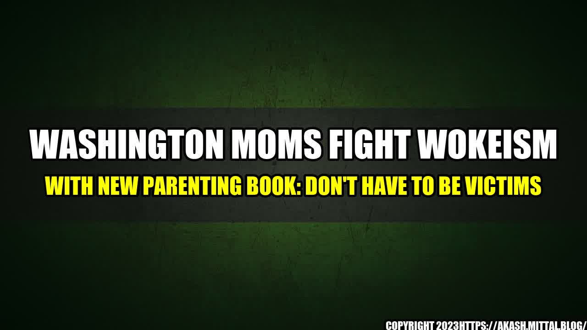

Washington Moms Fight Wokeism with New Parenting Book: Don't Have to Be Victims

A group of Washington moms has decided to take a stand against the spread of woke ideology in schools. They believe that parents should not be victims of this divisive and harmful trend that is taking over our education system, but rather informed and empowered leaders in their children's education. To achieve this goal, they have written a new parenting book called Don't Have to be Victims, which offers practical advice and solutions for parents who want to push back against wokeism and ensure their children receive a quality education that prepares them for the real world.
The authors of the book, Cathy and Marlene, are two mothers who have experienced first-hand the negative impact of woke ideology in their children's education. They noticed that concepts like critical race theory, gender identity, and social justice were being taught as absolutes, with no room for discussion or disagreement. They also saw how this one-sided approach to education was harming their children's critical thinking skills, self-esteem, and social development. So they decided to get together and write a book that would empower parents to take action and create change.
Wokeism is a term used to describe a set of beliefs and values that prioritize social justice, diversity, and equity over traditional academic subjects and objective standards of merit. While these concepts may sound noble and desirable, they often lead to a narrow and biased interpretation of history, literature, and science, as well as a divisive and intolerant attitude towards dissenting opinions.
Here are some quantifiable examples of how wokeism is affecting schools:
These examples show how wokeism is replacing traditional academic standards and objective criteria with ideological agendas and political correctness. They also show how parents are becoming more aware and concerned about this phenomenon, and how they need more guidance and support in order to stand up against it.
The book Don't Have to be Victims offers a variety of practical tips and strategies for parents who want to fight back against wokeism in schools. Here are some of them:
These practical tips can help parents be proactive and effective in fighting against wokeism in schools. They can also help parents build stronger and more rewarding relationships with their children, and empower them to become lifelong learners and global citizens.
The rise of wokeism in schools is a complex and divisive issue that requires a comprehensive and collaborative response from all stakeholders, including parents, educators, policymakers, and the media. Parents, in particular, have a crucial role to play in shaping the education system of the future, and ensuring that it reflects their values and priorities.
The book Don't Have to be Victims is a valuable resource for parents who want to learn more about wokeism and how to resist it. It offers practical advice, inspiring stories, and personal anecdotes that show how parents can make a difference in their children's education and in their communities.
By following the tips and strategies outlined in the book, parents can create a more inclusive, diverse, and intellectually stimulating environment for their children, and help them grow into confident, thoughtful, and ethical individuals who are equipped to navigate the challenges and opportunities of the 21st century.
Curated by Team Akash.Mittal.Blog
Share on Twitter Share on LinkedIn